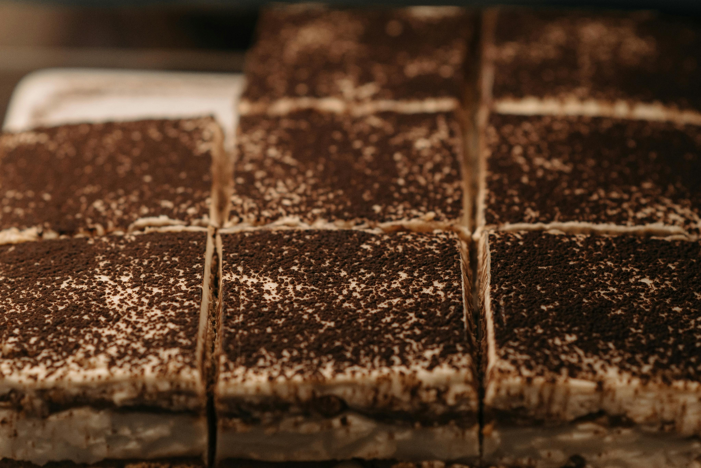

Tiramisu

For a Friday night craving for coffee-soaked ladyfingers and cream
This yummy and classic desert that's perfect for a quick snack, while still hitting your protein goals!
4 Slices
172 kcal | 17g P
Ingredients
- 20g plain flour
- 30g cocoa powder
- 1/4 tsp baking powder
- 2 tbsp sweetener
- 35g protein blend powder
- Flavouring
- 150ml sparkling water
- 150g fat-free Greek yogurt
- 15g protein powder
- 9 sponge fingers
- 5g cocoa powder
Steps
- Put 20g of plain flour, 30g of cocoa powder, 1/4 tsp of baking powder, 2 tbsp of sweetener, 35g of protein blend powder, flavouring drops, 150ml sparkling water into a bowl.
- Mix well with a whisk.
- Pour into a lined 5x5 inch tin/mould.
- Bake at 180C for 20 mins, and set it aside to cool completely.
- Add 150g of fat free Greek yogurt, 15g of protein powder, and sweetener drops (optional) to a separate bowl.
- Mix well.
- Dip 9 sponge fingers in cold-brewed coffee, and layer them over the cooled brownie (don't soak for too long!)
- Add yogurt mixture to the top and smoothen the layer out.
- Optional: Set in the fridge.
- Dust 5g Cocoa powder